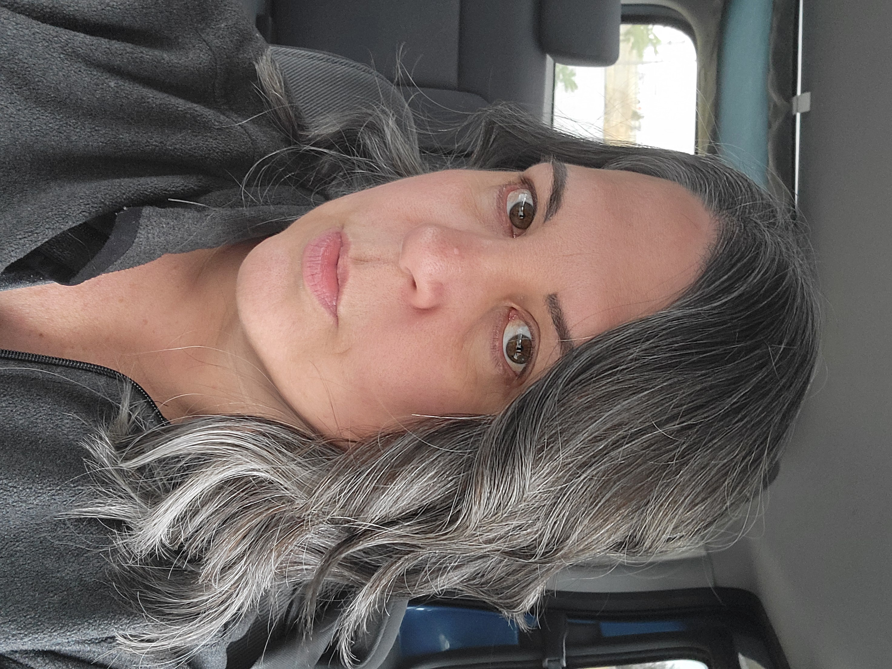

My Resume

Summary:
Experienced IT professional who is committed to ongoing skill development and adaptability. Over 25 years of experience in multiple industries, including chemical production facilities, technical support call centres, construction management, engineering, and post-secondary institutions.
Education:
- Working on Full-Stack Web Development course (HTML, CSS, Javascript, Note, React, PostgerSQL, Web3, DApps)
- Nearing completion of Bachelors of General Studies in Arts and Science
- ServiceNow System Administrator certification
- AWS Cloud Practitioner
- ITIL Foundations certification
- ITIL Practitioner certification
- PMP 39 hour course
- MCSE
- MCSE +Internet
- A+
Work Experience:
- Over 25 years work experience in various information technology roles, across multiple industries
- 10+ years supervisory and management experience
- 5+ years training delivery experience
- 20 years service desk and/or desktop support experience
- 2 years Brightspace/D2L course development experience
- Training video production, including voiceovers
- MS Access database development
- Bilingual technical support delivery to government and consumer clients
Skills:
- HTML
- CSS
- Camtasia
- DaVinci Resolve
- ServiceNow
- Brightspace
- AWS Foundations
- ITIL
- Microsoft M365
- Adobe Acrobat Pro DC
- Azure
- MacOS
- Windows 11 (and all previous iterations starting at 3.1)
- Lubuntu
- Raspberry Pi
- Fully bilingual (English, French)
- WordPress website development and maintenance
Achievements:
- 10 year long-service award with current employer
- Multiple IT certifications
- 3.91 GPA (current university studies)
- Multiple scholarships, including Canada Scholarship and Rutherford Scholarship
More About Me:
Web Development Portfolio
Volunteerism
Hobbies & Interests
Contact Me